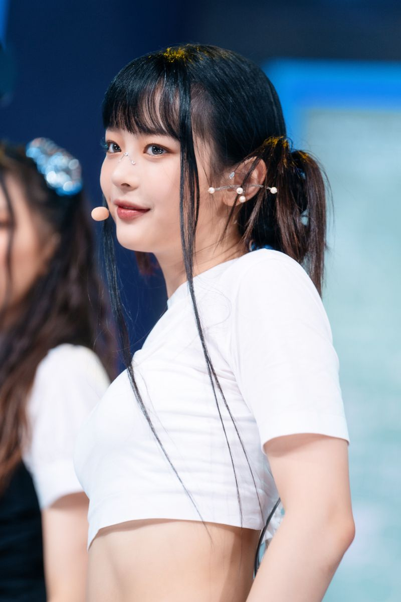
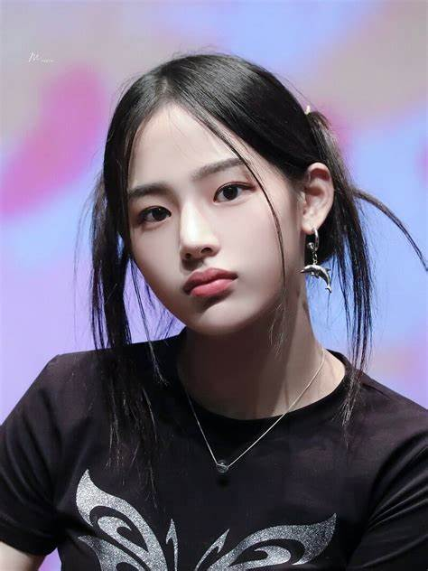
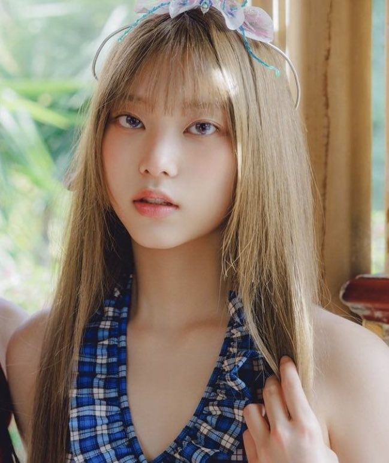
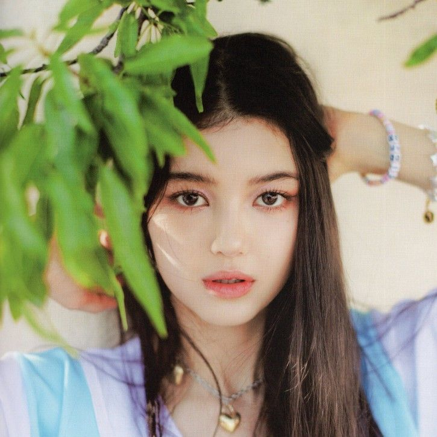
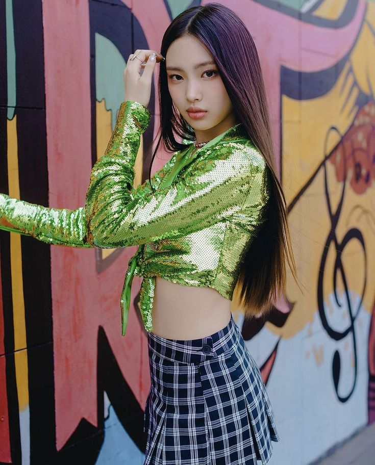
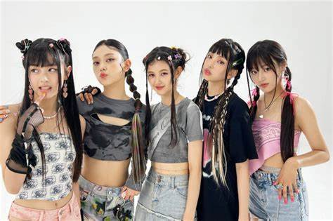

New jeans Integrantes
NewJeans (en hangul, 뉴진스; romanización revisada del coreano, nyujinseu) es un grupo femenino surcoreano formado por ADOR, agencia subsidiaria de HYBE Corporation. El grupo está conformado por cinco miembros: Minji, Hanni, Danielle, Haerin y Hyein. NewJeans debutó el 22 de julio de 2022 con el EP homónimo New Jeans.

Vocalista y bailarina
Hani: nació en 2004 y es vietnamita.

Vocalista y bailarina
Minji,nació en 2004 y es de nacionalidad coreana

Vocalista y bailarina
Haerin: nació en 2006 y es de nacionalidad coreana

Vocalista y bailarina
Danielle: nació en 2005 y es coreana-australiana

Vocalista y bailarina
Hyein: nació en 2008 y es coreana. Había debutado antes en el grupo infantil U.SSO. y se retiró en 2019.
